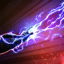

Darth Jar Jar
A phantom menace (allegedly) manipulating those around him into a false sense of security
A phantom menace (allegedly) manipulating those around him into a false sense of security

Deal Special damage to target enemy and Shock them for 1 turn. During his turn, if all allies are Sith, deal additional effects that last for 1 turn:
- Inflict Tenacity Down on all enemies that don't have it
- If any enemy had Damage Immunity, dispel it, and all Sith allies gain Damage Immunity
- If the target enemy has 3 or more stacks of Bleed, inflict Deathmark on them
Deal Special damage to target enemy and Manipulated enemies are Blinded and gain Speed Up for 1 turn. If there are no Galactic Legend or Sith Empire allies, target enemy becomes Manipulated if they didn't already have it and no other enemies have it, which can't be copied, dispelled, or resisted, until the end of the encounter, and they Stealth for 2 turns.
Darth Jar Jar gains Outmaneuver for 2 turns. Remove Marked from all allies then a random Sith ally gains bonus Protection (50%) until the end of the encounter and is Marked while they have this Protection. When this Marked expires, another random Sith ally is Marked and gains bonus Protection (50%) until the end of the encounter until all other Sith allies have been Marked by this ability.
Manipulated: Abilities gain additional effects
Deal Special damage to all enemies and inflict them with Plasma Residue for 2 turns. If there is a shield generator, it takes 15 additional instances of damage. Sith allies gain Defense Up and Foresight for 2 turns.
Darth Jar Jar Siphons Max Protection from all non-Manipulated enemies, which can't be resisted, then all Sith allies gain that amount until the end of the encounter.
Siphon Max Protection: Gain a percentage of Max Protection equal to this unit's Siphon until the end of the encounter and the targets lose that much Max Protection (stacking, excludes raid bosses and Galactic Legends)
Omicron Boost : While in Grand Arenas and there are no Galactic Legend allies: Sith allies gain 5% Offense (stacking) per Siphon stack on Darth Jar Jar until the end of the encounter. Inflict all enemies with Healing Immunity for 1 turn, which can't be resisted. Enemies without Protection can't resist the Plasma Residue and whenever it expires it is reapplied at the end of the turn if Darth Jar Jar is active. If any enemy has Bleed, inflict a stack of Bleed on all enemies that don't have it until the end of the encounter.
Whenever Darth Jar Jar is Ability Blocked, Dazed, or Stunned, the enemy who inflicted it is inflicted with the same debuff for 1 turn, which can't be dispelled. Sith allies are immune to Investigation.
At the start of each encounter, Darth Jar Jar Marks himself, which can't be dispelled, until he receives damage. At the start of each enemy's first turn, a random Sith ally gains a bonus turn if they haven't taken a turn yet. Sith allies are immune to cooldown manipulation until they use a Special ability. Darth Jar Jar ignores Taunt effects on his first turn.
Whenever a Manipulated enemy falls below 100% Health, Sith allies gain a stack of Dark Infusion (stacking, max 3), which can't be dispelled or prevented, until the end of battle. Whenever a Manipulated enemy gains a buff, Darth Jar Jar gains 3 Siphon. Whenever a Manipulated enemy is inflicted with a debuff, the weakest other enemy is Feared for 1 turn if they don't already have it.
While any Sith ally is Marked, Darth Maul has 100% counter chance and Defense and deals 10% bonus True damage based on his Max Health.
Omicron Boost : While in Grand Arenas: Whenever a Sith ally is Ability Blocked, Dazed, or Stunned, the enemy who inflicted it is inflicted with the same debuff for 1 turn, which can't be dispelled. While Sith allies are Stunned and are damaged by an attack, deal 100% of the damage received to the attacker as True damage (this damage can't defeat them). Whenever a Sith ally is Feared, at the end of the turn, they deal 1 True damage to themselves (this damage can't defeat them).
At the start of battle, Darth Jar Jar gains Hatred, which can't be copied, dispelled, or prevented, for the rest of battle. Whenever an enemy takes damage from Bleed, Darth Jar Jar gains Frenzy for 2 turns. Darth Jar Jar gains a bonus turn after the first turn taken by the enemy in the Leader slot in each encounter.
Whenever a Manipulated enemy starts their turn, they take 50% Max Health damage (this damage can't defeat them), then equalize their Health and Protection with the strongest enemy, and Darth Jar Jar gains a bonus turn.
Whenever Darth Jar Jar uses every ability, ally Darth Sidious gains Emergency Powers, which can't be copied, dispelled, or prevented, if he didn't already have it, for 2 turns. Once this effect has expired, Darth Jar Jar must use every ability again for Darth Sidious to gain Emergency Powers.
Omicron Boost : While in Grand Arenas and there are no Galactic Legend allies: All Sith allies gain Hatred, which can't be copied, dispelled, or prevented, for the rest of battle. Whenever a Sith ally is Ability Blocked they gain Massively Overpowered for 1 turn.
Emergency Powers: +200% Defense, Offense, 100% counter chance and +100 Speed; at the start of this unit's turn, all allies recover 100% Health and Protection